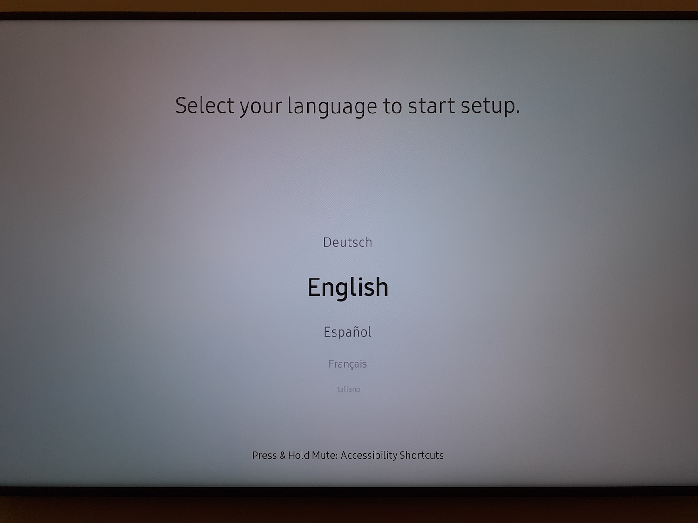
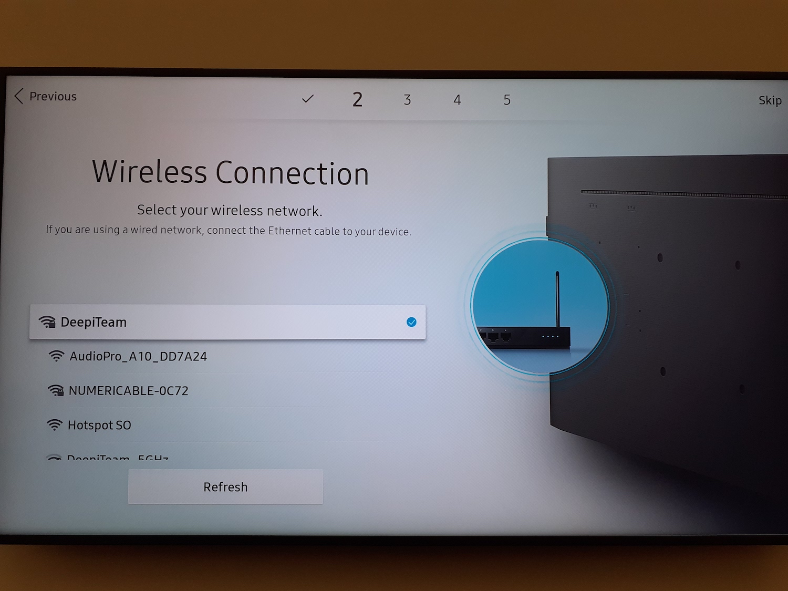
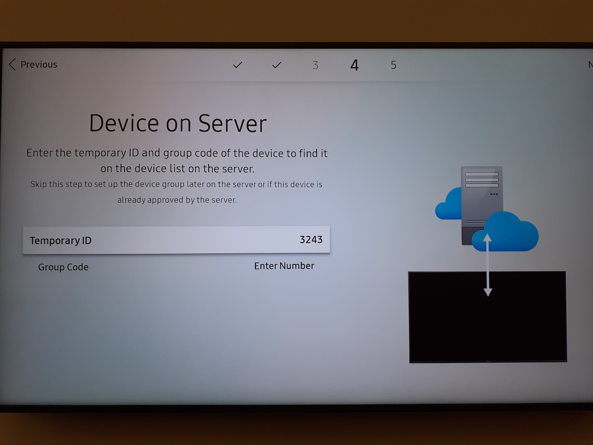
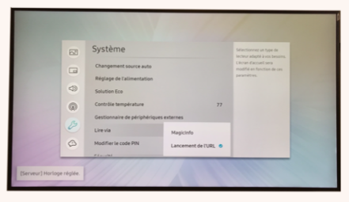
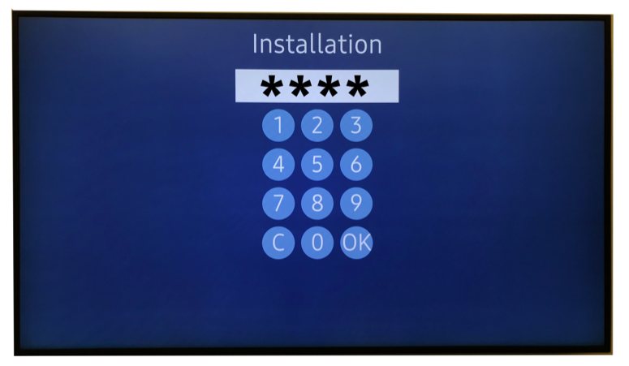

Initialisation
Sélectionnez votre langue
Choisissez PAYSAGE comme orientation de l'affichage

Hors Tension : Laissez le paramètre par défaut sur Arrêt

Configuration Réseau
L'écran va rechercher automatiquement une connexion Internet :
Si votre écran est connecté à l’aide d’un câble RJ45, il se connectera alors automatiquement
Vous ne pourrez pas installer l' application, si votre écran n'est pas relié internet
Ne reliez pas votre écran à un Wifi pour invités (ce genre de réseau n'a pas assez de permissions pour permettre un fonctionnement optimal)
Pour une connexion Wifi : sélectionnez la connexion sans fil désirée, renseignez le mot de passe puis validez
Connexion au serveur distant : Choisir 'Configurer maintenant'.
Renseignez l'adresse remote.deepidoo.com
Ne pas modifier les autres paramètres

Réglez la date et l’heure

NOM DE PÉRIPHÉRIQUE : Ne pas modifier
Terminez la procédure
Pour configurer votre connexion Internet avec IP Fixes
Cliquez sur le bouton HOME de la télécommande, allez sur ETAT DU RESEAU, puis validez
Cliquez sur Param. IP, puis renseignez la configuration réseau validé avec votre siège
=> Config IP : choisir 'Obtenir Manuellement'
=> Adresse IP: fournie par votre siège
=> Masque Sous Réseau: fourni par votre siège
=> PAsserelle : fournie par votre siège
=> Serveur DNS : fourni par votre siège

L'application Deepidoo
Cliquez sur le bouton Menu => System => Lire Via => Lancement de l'URL => OK
Cliquez sur le bouton Home => Lancement de l'URL. Puis renseignez l'URL 'http://tizen.deepidoo.com' puis validez en cliquant sur 'Terminé'

Composez le code fournit par Deepidoo puis pressez la touche OK (Vérifiez que l’adresse qui s’affiche corresponde bien à votre magasin avec de valider)
Mon écran a déjà été installé (l'heure et la langue sont déjà configurées)
Vous allez configurer votre connexion réseau et téléchargez l'application Deepidoo
Configuration Réseau
Vérifiez la connexion au réseau:
Cliquez sur le bouton HOME de la télécommande
Cliquez sur État du réseau
Validez
S vous êtes bien BIEN connecté, passez à l'étape de l'installation de notre application

Si vous n'êtes PAS connecté, passez à l'étape suivante

Vérifiez la connexion au réseau:
Cliquez sur le bouton HOME de la télécommande
Cliquez sur État du réseau
Validez
Cliquez sur Param. IP et Renseignez la configuration réseau validé avec le siège
Si la connexion est en réseau DHCP
=> Config IP : Obtenir automatiquement
=> Config DNS: Obtenir automatiquement
Si Configuration réseau IP fixe ( Sécurisée), sélectionnez:
=> Config IP : 'Obtenir manuellement', Puis renseignez les données suivantes
=> Adresse IP, Masque Sous-Réseau, Passerelle
=> Config DNS: Obtenir manuellement => renseignez votre Serveur DNS
=> Validez en sélectionnant OK

L'application Deepidoo
Cliquez sur le bouton Menu => System => Lire Via => Lancement de l'URL => OK
Cliquez sur le bouton Home => Lancement de l'URL. Puis renseignez l'URL 'http://tizen.deepidoo.com' puis validez en cliquant sur 'Terminé'
Composez le code fournit par Deepidoo puis pressez la touche OK (Vérifiez que l’adresse qui s’affiche corresponde bien à votre magasin avec de valider)